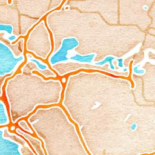

About SIMILE
SIMILE (Integrated monitoring system for knowledge, protection and valorisation of the subalpine lakes and their ecosystems), is an INTERREG Italy-Switzerland project, started in 2019, that aims at preserving the water quality of the subalpine lakes Lugano, Como and Maggiore by integrating new monitoring techniques to the existing ones.
For more information, please visit the Interreg-SIMILE website
SIMILE WebGIS
The WebGIS provides a user-friendly environment for the visualisation of SIMILE’s satellite based lake water quality parameters maps. The application aims at simplifying the access and retrieval of time series of data to monitor the different water quality measurements by incorporating advanced functionalities such as the time widget and layer information display. Visit the GitHub repository of the WebGIS Github

Static Layers
Time Series Layers

- 